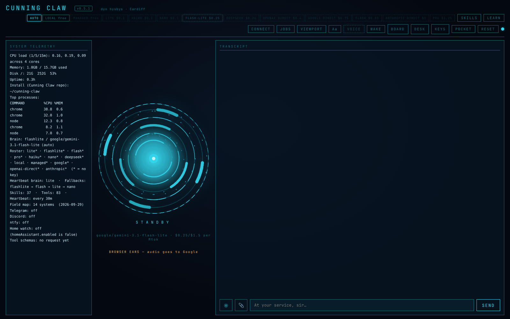
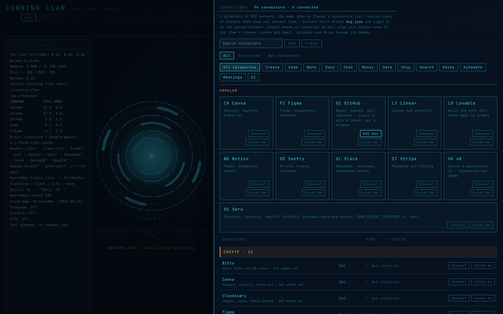
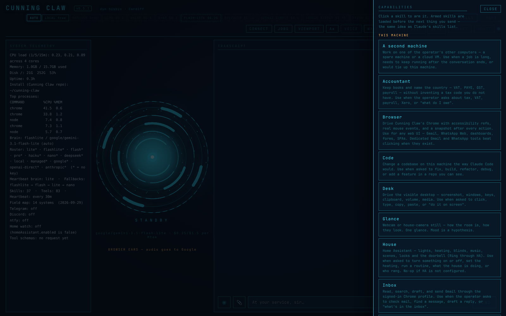

Cunning Claw / Everything he does
Everything he does, and where he stops.
Cunning Claw is a local AI agent: he runs on your own computer and works it for you. This page is the long list: a week of real jobs, every tool, all ninety-five connectors, and what arrived in version 0.5.
Counted, not rounded
The numbers on this page are counted from the code at version 0.5.2: 83 tools, 95 connectors, 37 skills. Each job below names the point where he stops and asks.
A week with Cunning Claw
A small business's week, in full.
Seven moments from an ordinary week, each something he can do today, and the point where he stops and waits for you.
The honest bit
This is an illustration of what he can do, not a customer's story. He works while your computer is on. Xero, Cloudflare and Canva are connectors: each needs your own account, set up once, and Guide me walks you through it. Gmail is one account for now, and Outlook on the web works too.
-
Mon08:00
The briefing is on his notes page before you are.
He reads today's calendar and your unread email in his own browser, counts the unread WhatsApps, checks the weather, and writes it up in three sentences.
Where he stops
Nothing to stop for: it is a note. With phone alerts set up, a copy reaches your phone.
-
Tue10:15
A supplier's invoice, read and drafted into Xero.
Hand him the PDF. He reads the supplier, the lines and the amount due, and gets the bill ready in Xero.
Where he stops
Creating the bill waits for your yes. The PDF is a stranger's words: if it tries to give him orders, he flags it.
-
Wed09:30
Three customers answered, in your tone.
Three emails have waited since yesterday. He reads each thread and drafts a reply the way you have told him you like to write.
Where he stops
You read them. Each one goes only when you say send.
-
Wed14:00
“Can you fit me in on Saturday?”
A customer asks on WhatsApp. He looks at Saturday on your calendar and types an answer into the chat.
Where he stops
The reply is typed, not sent. Sending waits for you.
-
Thu11:40
The website still works after the change.
You changed the site this morning. Out and about, you ask him on Telegram to check it: he opens the live pages in his browser, looks over your Cloudflare account, and answers you there.
Where he stops
Looking is free. Changing anything on Cloudflare asks first.
-
Fri17:00
The week, summed up on his notes page.
Money in, jobs done, who is owed a follow-up: from your inbox, his journal of the week, and Xero if it is connected. One page, waiting for you.
Where he stops
A note, nothing sent. You set it up once, as a standing order.
-
Fri17:30
The weekend offer, drafted in Canva.
Ask for a post about Saturday's offer and he makes the design in your own Canva account, with your brand kit if you have one.
Where he stops
Making the design asks first, and nothing goes public without your yes.
Standing orders
Monday and Friday are standing orders. Tell him once, “every weekday at eight, a briefing; every Friday at five, the week”, and he writes them down. Arming a new one asks you first. Day names can be written in Welsh or English:
- [x] schedule: `08:00:llun-gwe` | target: briefing | instruction: Calendar, inbox, WhatsApp and weather on the Desk. - [x] schedule: `17:00:gwener` | target: nudge | instruction: The week on the Desk: money in, jobs done, follow-ups.
What he can do
He runs on your computer, and works it.
Eighty-three tools, counted from the code at version 0.5.2. Anything that sends, spends, publishes or deletes waits for your yes.
- Sees
- Takes a screenshot of your screen and reads it, to check where things stand and to verify his own work.
- Operates
- Commands, files, apps, windows, keystrokes, the clipboard, volume, media and notifications.
- Browses
- Drives his own Chrome: opens, reads, clicks, fills in and submits.
- Reads mail
- Your Gmail or Outlook inbox and search. He drafts, and sends with your approval.
- WhatsApp Web in the same Chrome: the chat list, unread count, drafts. Every send is an approval.
- Reads documents
- Word, Excel and PowerPoint files open with nothing installed; PDFs and scans need free add-on tools. Whatever a document says is read as a stranger's words.
- Remembers
- Memory kept as plain files on your disk, searched by meaning, and a dated journal that survives restarts. He writes his own skills after a job he has not done before.
- Speaks and listens
- Text-to-speech that runs fully offline, and dictation transcribed on your own machine.
- Connects
- Ninety-five connectors from one page, and any other MCP server you paste in. All of them, below.
- Accounts
- Xero through its official connector, and a UK tax pack. He will not invent a rate or file a return.
- Receipts
- Photograph a receipt and it is read into a ledger: date, shop, total, VAT. A bookkeeping aid, not an accountant.
- Markets
- Follow-ups, review requests, reminders and newsletters in your business's voice, sent through a proper mailing service after one approval per campaign, and never to anyone your consent list does not hold.
- Finishes projects
- Research with every claim sourced, grant and tender drafts against the funder's own scoring, presentations and project plans, saved as PDFs you can send. You do the submitting.
- Builds
- Writes code, or hands a coding job to Claude Code on its own branch after a card showing the exact brief. He never pushes or merges.
- Reaches you
- Telegram or Discord as a second line, with approval cards as buttons in a private chat; his own phone app, Pocket Claw; and ntfy for a push alert with no account.
- Watches
- A check every thirty minutes that stays silent when there is nothing worth saying.
- The house
- Lights, heating, blinds and scenes through Home Assistant; doorbell and door alerts to your phone; a visitor log that stays on your machine. Unlocking or disarming asks afresh every time.
- Works elsewhere
- Any machine you own, over ssh. Long jobs run detached and survive your laptop closing.
- Glances
- One still from the webcam, and he asks every time.
- Keeps the bill
- Every reply's cost is shown on screen, to four decimal places.
What you see
One window in your browser. Four rooms.
These are real captures of his window on a fresh install, in his own colours.




What he connects to
All ninety-five connectors, and what is built in.
Some of his tools are built in. The rest are connectors: links to services you already use, each one your own account, signed in by you.
Listing is not connecting
A connector does nothing until you add it and sign in with your own account. Whichever one he uses, anything that sends, spends, publishes or deletes waits for your yes, and words that come back along it are read as a stranger's, never as orders. The groups are the Connect sheet's own.
Built in. Sign in once, or switch it on.
- Gmail
- Google Calendar
- Drive
- Outlook on the web
- your screen
- your files
- Telegram
- Discord
- ntfy
- Home Assistant
- a second computer over ssh
Sign in once in his own Chrome. One Gmail account for now. Home Assistant and a second computer are off until you switch them on.
Money. 7 connectors.
- Stripe
- PayPal
- Square
- Ramp
- Mercury
- GoCardless
- Xero
Websites and hosting. 8 connectors.
- Vercel
- Railway
- Render
- Squarespace
- Cloudflare
- Netlify
- GoDaddy
- WordPress.com
Sales and email marketing. 9 connectors.
- HubSpot
- Attio
- MailerLite
- Klaviyo
- Resend
- Clay
- ZoomInfo
- Outreach
- Harmonic
Automation. 3 connectors.
- Zapier
- Make
- IFTTT
Work. 7 connectors.
- Linear
- Asana
- Atlassian
- monday.com
- ClickUp
- Ticket Tailor
- DevRev
Documents. 6 connectors.
- Notion
- Box
- Egnyte
- Guru
- Craft
- Mem
Chat and support. 3 connectors.
- Slack
- Intercom
- Pylon
Make and design. 13 connectors.
- Canva
- Forgenet
- Figma
- Storyblok
- Miro
- Webflow
- Lucid
- Jotform
- Gamma
- Wix
- Sanity
- Cloudinary
- Bitly
Code. 15 connectors.
- GitHub
- Sentry
- Context7
- Clerk
- Postman
- Microsoft Learn
- Jam
- Apollo GraphOS
- incident.io
- Datadog
- Honeycomb
- Lovable
- v0
- Magic Patterns
- Expo
Data. 15 connectors.
- Supabase
- Airtable
- Neon
- Prisma
- Convex
- Appwrite
- Amplitude
- Mixpanel
- PostHog
- BigQuery
- Similarweb
- MotherDuck
- PlanetScale
- Llygad
- Uwchben
Search and research. 4 connectors.
- Tavily
- Exa
- Ahrefs
- Consensus
Meetings. 3 connectors.
- Granola
- Circleback
- Krisp
AI. 2 connectors.
- Hugging Face
- Adar
New in 0.5
He teaches you to work him safely, and answers to your phone's lock.
Each of these is a module with its own tests, and the ones not yet tried on real hardware say so.
Learn mode
Twelve short lessons in working an AI agent safely: reading an approval card, spotting an email that tries to give orders, what leaves your machine. You practise on fake email and invoices where every card says PRACTICE · nothing real will happen. Marked by code, not by the AI.
Welsh lessons wait for a Welsh-speaking author.
Pocket Claw
His own phone app, Android first. Chat, approve a card with your fingerprint, face or screen lock, snap a receipt, or share a photo or PDF to him from any app. Pair it by scanning a QR code on his screen, through our end-to-end encrypted relay, which passes sealed messages it cannot read; or through Tailscale, your own private network. Notifications say how many cards wait, never what is on them.
Driven in an emulated phone so far; no real phone has paired through the relay yet.
Coding jobs
He hands a coding job to Claude Code on its own branch, after a card showing the exact brief, and reports back what changed and what the tests said. He never pushes or merges, and refuses once he has read a stranger's words. A real job is filmed.
Claude Code is a separate tool from Anthropic that you install and pay for yourself.
Voice notes
Send a Telegram voice note and he hears it on your own machine, shows you what he heard, and runs it as if typed. He can answer in voice too. A voice note never answers an approval card, and a forwarded one is never obeyed.
Receipts
Photograph a receipt and it is read into a ledger on his notes page: date, shop, total, VAT, in whole pence, with a spreadsheet export and corrections in plain words. Whatever the slip says can never steer him.
A bookkeeping aid, not an accountant.
The house
Lights, heating, blinds and scenes through Home Assistant; doorbell, motion and door alerts to your phone with quiet hours; a visitor log that stays on your machine: events, never faces. Unlocking or disarming asks afresh every time.
A desk marketer
Follow-ups, review requests and newsletters in your business's voice, sent through a proper mailing service after one approval per campaign, only to people on your consent list.
Projects
Research with every claim sourced; grant and tender drafts against the funder's own scoring; presentations and project plans, saved as PDFs. A tender watch for Find a Tender, Contracts Finder and Sell2Wales. You do the submitting.
Since 0.5.0
0.5.2: pairing a phone with no Tailscale, a .deb for Ubuntu and Debian, an update light you can switch on (one small file a day from this site, nothing about you in the request), replies that show bold and bullets properly, and a scanner that catches the wording of the “our bank details have changed” scam.
0.5.1: proper installers for Windows, Mac and Linux, and Outlook: Microsoft 365 work accounts and personal Outlook.com, through the same email tools as Gmail (not yet tried on a real Microsoft account).